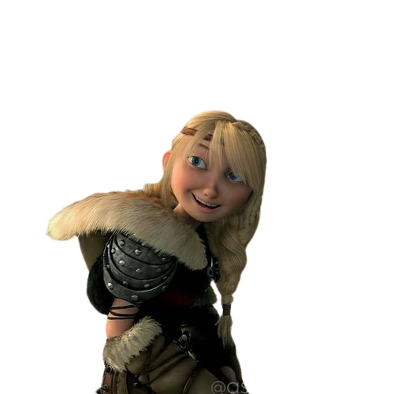
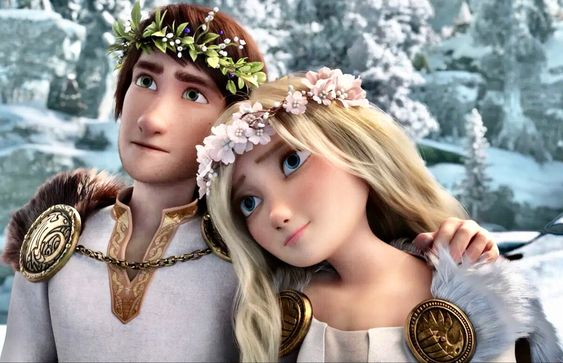

|  | Ela é impressionante, resistente, muito bonita e sua determinada e forte personalidade à fazem duro de impressionar. Astrid é o interesse amoroso principal de Soluço no filme. Apesar de inicialmente não gostar de Soluço ou sua amizade com Banguela, ela muda de opinião e ajuda a tentar manter isso em segredo. |
| Ela é a única viking sem capacete visto no filme nos três curtas. Ela é forte,agressiva,bonita e durona não é do tipo encantadora,mas Soluço não consegue deixar de se encantar. | |
|  | Ela é casada com Soluço. |